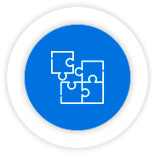
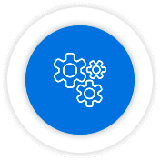
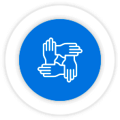
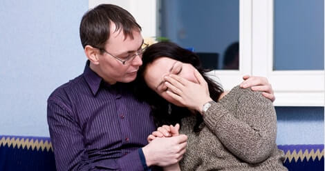
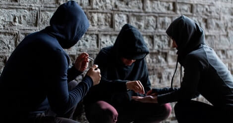

Реабилитация наркозависимых
Зависимость может формироваться по множеству причин, это может быть и генетическая предрасположенность, воспитание в семье, школа, улица, созависимые отношения и т.д. На человека влияют множество факторов, в результате чего формируются ценности и образ жизни личности. Что бы изменить уже сформированную личность, потребуется комплексное воздействие на человека, а не только очистка организма от токсических последствий, необходимо поменять ценности и привычный уклад жизни наркомана. Такие изменения возможны только в условиях изоляции, от привычного социума, в стационарной программе.
Целью реабилитации наркозависимых является полное прекращение употребления наркотических веществ, разрушивших жизнь зависимого. Восстановление физических, духовных, морально-нравственных, социальных и психических аспектов личности человека.
ПРОФЕССИОНАЛЬНОЕ ЛЕЧЕНИЕ
НАРКОМАНИИ
Процесс длительной реабилитации помогает зависимому понять причины употребления наркотиков и возникновения тяги. Зачастую формирование зависимости происходит в подростковом возрасте и продолжает развиваться на протяжении всего употребления. Сначала человек пользуется наркотиком, как помощником ухода от проблем, своеобразной анестезией чувств, дальше употребление становится зависимостью с пагубными последствиями. Исходя из этого мы понимаем природу наркомании зависимого, человек не использует полностью свой потенциал в решении проблем возникающих в социуме, не умеет осознавать и удовлетворять истинные потребности. Все это создает благоприятную почву для развития наркомании.
В процессе лечения наркоман осознает, что употребление не решает его проблемы, а наоборот усугубляет их. В реабилитационном процессе человек приобретает следующие навыки и опыт:
- опыт ответственности за себя и других;
- построение здоровых отношений в социуме;
- умение осознавать свои потребности и удовлетворять их;
- навык выражения истинных эмоций безопасным способом;
- справляться со стрессами без применения привычного наркотика.
КАК ОТЛИЧИТЬ ПРОФЕССИОНАЛЬНУЮ
РЕАБИЛИТАЦИЮ
Сейчас реабилитацию наркомании предлагает огромное количество частных реабилитационных центров. К огромному сожалению не все они работают добросовестно и профессионально, а многие даже нарушают действующие законодательство РФ. Что бы не попасть в подобный центр, секту или трудовой лагерь, Вам необходимо более внимательно подойти к выбору реабилитации и обратить внимание на следующие критерии:

КОМПЛЕКСНЫЙ ПОДХОД
Профессиональная программа реабилитации предполагает воздействовать на наркомана с разных сторон: физиологической, психической, социальной, духовно-нравственной. Не профессиональные центры зачастую не эффективны именно по том что не затрагивают все аспекты личности.
Реабилитация в нашем центре предполагает глубинный подход и затрагивает все сферы жизнедеятельности человека. По прохождению полного курса, пациент выходит наиболее восстановленным как личность.
ИНДИВИДУАЛЬНЫЙ ПОДХОД
Во многих центра зависимых лечат по одной программе, не учитывая особенности личности, возраст, пол и стаж употребления. Такой подход в корне неправильный. Необходимо подобрать индивидуальную программу с учетом всех особенностей личности.
С момента поступления резидента в центр, наши специалисты проводят серьезную диагностическую работу, собирают анамнез, изучают историю заболевания и личные особенности. Пациент работает по личной программе выздоровления, она может меняться в процессе реабилитации.

МЕТОДЫ, ПРИЗНАННЫЕ МИРОВЫМ И РОССИЙСКИМ НАРКОЛОГИЧЕСКИМ СООБЩЕСТВОМ
Доказано наркологами, психотерапевтами и опытом реабилитационных центров, что использование программ «12 шагов», «Терапевтическое сообщество», «Дейтоп», «Миннесота» в лечебных программах являются самыми эффективными. Это подтверждается тысячами спасенных жизней, за долгие годы работы подобных центров.
В «Lotus-clinic» элементы этих программ являются неотъемлемой частью реабилитации, так же мы используем разные психотерапевтические методики, разработанные для лечения наркомании, именно нашими специалистами, что необходимо для индивидуального подхода.
БЕЗОПАСНОСТЬ И КОМФОРТ ПРЕБЫВАНИЯ
Как правило, лечение дома заканчивается неудачно, наркоман в любой момент, когда накрывает тяга, уходит употреблять.
Именно поэтому, реабилитация должна проходить в условиях полной изоляции и без возможности моментально покинуть центр. Так же важно, чтобы к зависимому не проникли его «друзья» с дозой. Необходим строгий пропускной контроль с минимальным взаимодействием с социумом, особенно на первых этапах.
При этом, условия пребывания должны быть комфортными, удобные кровати, достаточное количество душевых комнат и туалетов, все должно соответствовать нормам и стандартам проживания. Так как резидент находится достаточно длительное время в центре, быт должен походить на домашний. Наш центр полностью соответствует всем стандартам, в том числе и противопожарным нормам.
РАБОТА С РОДСТВЕННИКАМИ
Давно доказано, что зависимость это семейное заболевание. Работа с родственниками в профессиональных организациях должна быть регулярной и бесплатной. Еженедельные лекции, где родственники узнают о зависимости необходимую информацию, должны проводить дипломированные психологи, специализирующиеся на работе с созависимыми.
Так же регулярно должны проводиться семейные сессии со всем или отдельными членами семьи. В нашем центре это поставлено на регулярной основе и высоком, профессиональном уровне. Так же в любой момент можно посетить своего родственника, согласовав с вашим мониторным психологом свой визит.
ПРОФЕССИОНАЛЬНЫЕ СПЕЦИАЛИСТЫ
Важнейшим критерием при выборе центра должно быть наличие дипломированных и сертифицированных сотрудников. Это психологи, психотерапевты, врачи-наркологи и консультанты, их квалификация должна подтверждаться соответствующими документами. В центре «Lotus-clinic» работают только психологи, психотерапевты, социальные работники и консультанты прошедшие специальные курсы. Так же штат специалистов должен соответствовать количеству резидентов - это отличает профессиональную реабилитацию от других лже-центров, где работают только «бывшие» наркоманы, не имеющие должной квалификации
ДОГОВОР С ЮРИДИЧЕСКИМ ЛИЦОМ
С каждым резидентом подписывается договор об оказании услуг и добровольном пребывании его в центре. В свою очередь мы гарантируем конфиденциальность и не передаем информацию третьим лицам. Все расчеты должны осуществляться на расчетный счет организации. В противном случае, если вашему близкому будет нанесен ущерб вы не сможете доказать виновность организации и нахождения родственника в этом центре.
В нашем центре это условие стоит на важном месте.

ПОСТСТАЦИОНАРНАЯ ПРОГРАММА РЕАБИЛИТАЦИИ
Это заключительный, но не менее важный этап лечения. Именно на этом этапе зависимый пробует себя в социуме, под наблюдением наших специалистов.
Без постлечебной программы реабилитацию нельзя назвать полноценной, ведь человек пробывший долгое время вне социума, должен привыкнуть жить по новым правилам.
На этом этапе мы помогаем социализироваться, устроится на работу, наладить отношения с семьей и друзьями.
РЕАБИЛИТАЦИОННАЯ ПРОГРАММА
«LOTUS-CLINIC»
РЕАБИЛИТАЦИОННАЯ ПРОГРАММА «LOTUS-CLINIC»Наркомания - болезнь затрагивающая все аспекты личности. Достичь успеха в лечении возможно, проработав все сферы жизни зависимого. Такая работа постепенно проходит в центре «Lotus-clinic».
РАБОТА С ФИЗИЧЕСКИМ СОСТОЯНИЕМ ПАЦИЕНТА
Снятие абстинентного синдрома (ломки), очищение организма проводится под наблюдением медицинского персонала.
ПСИХОЛОГИЧЕСКОЕ ЛЕЧЕНИЕ - РЕАБИЛИТАЦИЯ
Проходит в условиях стационара, в центре реабилитации. На этом этапе зависимый должен научиться:
- знать о природе своего заболевания;
- уметь распознавать и справляться с психологической тягой;
- уметь справляться со стрессом и быстро выходить из депрессивных состояний;
- иметь навык здоровой коммуникации в обществе.
На этом этапе восстанавливаются все важные функции организма. Человек, буквально учится жить заново, как ребенок. Восстанавливаются отношения с семьей. Учится брать ответственность за себя и за других, взрослеет. Получает новый опыт.
АМБУЛАТОРНАЯ РЕАБИЛИТАЦИЯ
Этот этап наступает после прохождения стационарной программы, он является не менее важным, резидент возвращается в социум и учится жить по-новому, коммуницировать с обществом, семьей и друзьями, устраивается на работу. Все это, для зависимого человека сильный стресс, мы поддерживаем его и корректируем поведение на протяжении всей постстационарной программы. По-прежнему каждый день проходят занятия с нашими психологами, но уже в социуме.
ЕСЛИ ВАМ НЕ УДАЛОСЬ
УГОВОРИТЬ БЛИЗКОГО
НА РЕАБИЛИТАЦИЮ
Мы поможем!
РЕКОМЕНДАЦИИ ПО ПРОФИЛАКТИКЕ
РЕЦИДИВА
После полного курса реабилитации наркоман прекращает употребление химических веществ и получает рекомендации по профилактике рецидива, которые включают:
по шагам

самопомощи

Дневника чувств





ПОЭТОМУ БЛИЗКИМ НАРКОМАНА ВАЖНО ПРОЙТИ ПРОГРАММУ ДЛЯ СОЗАВИСИМЫХ И ИЗМЕНИТЬ СВОЕ ОТНОШЕНИЕ И ПОВЕДЕНИЕ.
Следует отдать зависимому ответственность за его жизнь, перестать контролировать и позволить ему быть самостоятельным человеком. Не нужно помогать выздоравливающему наркоману справляться с трудностями.
ОСТАЛИСЬ ВОПРОСЫ?
в решении Вашей проблемы